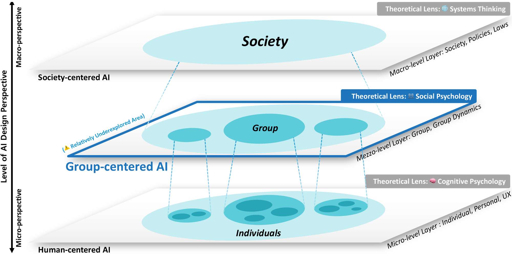

Publication
Beyond Individual UX: Defining Group Experience(GX) as a New Paradigm for Group-centered AI, DIS 2025
Read paper
Soohwan Lee, Seoyeong Hwang and Kyungho Lee. Beyond Individual UX: Defining Group Experience(GX) as a New Paradigm for Group-centered AI. ACM Designing Interactive Systems (DIS’25) Provocations and Works in Progress. https://doi.org/10.1145/3715668.3736348
Abstract
Most AI systems and digital tools today are designed to serve individuals, like recommending music you might enjoy or helping you type faster. But what happens when people work together as a group using AI? This paper argues that focusing solely on individual users overlooks an important aspect: the distinct ways groups think, feel, and interact with one another. The authors introduce the concept of “Group Experience” (GX), which examines how people collaborate, communicate, and make decisions as a team when technology is involved. For example, even if everyone in a group feels satisfied individually, the group may still struggle with issues such as fairness, creativity, or inclusion. To address this, the authors propose a new approach called “Group-centered AI,” which supports group dynamics, values all voices, and facilitates teams working more effectively together. They draw on psychology and organizational research to suggest better ways to design and evaluate these systems. This new direction aims to develop AI that not only assists individuals but also genuinely supports collective human endeavors.
오늘날 대부분의 AI 시스템과 디지털 도구들은 개인을 위한 용도로 설계되어 있습니다. 예를 들어, 사용자가 좋아할 만한 음악을 추천하거나 타자를 더 빠르게 칠 수 있도록 도와주는 식입니다. 하지만 사람들이 AI를 활용해 집단으로 함께 작업할 때는 어떤 일이 벌어질까요? 저자는 개인 사용자만을 중심에 두는 시각이 중요한 무언가를 놓치고 있다고 주장합니다. 바로 사람들이 집단으로 사고하고, 느끼고, 상호작용하는 독특한 방식입니다. 저자들은 기술이 개입된 상황에서 사람들이 어떻게 협업하고, 소통하며, 의사결정을 내리는지를 살펴보는 개념인 “그룹 경험(Group Experience, GX)”을 제안합니다. 예를 들어, 집단 내 모든 개인이 각자 만족하고 있다고 해도, 그 집단이 공정성, 창의성, 또는 포용성 측면에서는 어려움을 겪을 수 있습니다. 이를 해결하기 위해 저자는 “집단 중심 AI(Group-centered AI)”라는 새로운 접근법을 제안합니다. 이 접근은 집단의 역동성을 지원하고, 구성원 모두의 목소리를 존중하며, 팀이 더 잘 협력할 수 있도록 돕는 것을 목표로 합니다. 저자는 심리학과 조직 연구를 바탕으로 이러한 시스템을 더 잘 설계하고 평가할 수 있는 방식을 제안합니다. 이 새로운 방향은 단순히 개인을 돕는 수준을 넘어, 집단 전체의 인간적 노력을 실질적으로 뒷받침하는 AI를 만드는 것을 지향합니다.